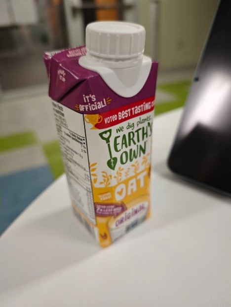

SCP-CA-004 (The Jobber)
Item #: SCP-CA-004
Object Class: Euclid
Special Containment Procedure: SCP-CA-004-1 (referred to as CA-004-1) is to be admitted as a co-operative education student with Honours in the Computer Engineering program in the University of ███████, and employed at ████ Inc. Ltd until the end of their co-operative education work term. MTF Theta-24 (“Job Seekers”) is to remain within 1000-meter radius of CA-004-1 at all times to monitor the employment status of CA-004-1 and collect the produced SCP-CA-004-2 (referred to as CA-004-2). Until further notice, MTF Theta-24 will report to Site-CA-084 directly and contain instances of CA-004-2 whenever possible during their reporting period.
CA-004-2 will be contained in the storage facility associated with Site-CA-084, with a storage limit of 100. A single D-class personnel is to be assigned to consume the excess units of CA-004-2 at the end of each month, and their health status monitored for the next three months, during which period they are exempt from monthly execution.or higher by the SMIT.
Edit on Apr. 30th, 2025:
In the case of Incident Chomage, the foundation-affiliated shell company Semantic Cognition Processor Inc will immediately extend a 4-month offer to CA-004-1, including:
- An hourly wage matching the average co-op salary in Canada, listed by Statistics Canada;
- A hybrid working condition with the in-person segment located in Markham, ON, Canada;
- Job responsibilities that highly match the skillset of CA-004, namely, machine learning.
If necessary, MTF Theta-24 will administer Class-C amnestic gas in the University of ███████ residence, or the ████ █████ Hall, to control CA-004-1 and force the acceptance of the offer from Semantic Cognition Processor Inc.
Arrangements are to be made with the board of governors (or, in this case, the Senate) of the University of ███████ to ensure that CA-004-1 remain “employed” at all times during a job-seeking term on their official job board, any affiliated public websites, and employment statistics tracker. A cover story of database error is to be released to explain the fact that the employment statistic of the University of ███████ is never 0%.
Description: SCP-CA-004 (referred to as simply CA-004) is a set of anomalies occurring specifically to the humanoid entity CA-004-1. CA-004-1 is a humanoid entity, appearing constantly to be an Asian-Canadian woman with a height of [redacted] meters, with their government identification documents recording a birth date in the year 2006 and the legal name of [redacted] Wu.
The anomalous nature of CA-004 could be split into CA-004-2 and CA-004-3. CA-004-2 is one (1) gluten-free oat milk produced by Earth’s Own Food Company of standard size and chemical makeup. According to its nutrition facts table, it contains 120 Calories of energy, 5 grams of fat, 3 grams of protein, 17 grams of carbohydrate, no cholesterol, and 120 milligrams of sugar. The title “Earth’s Own Oat” is printed in English and French on the front and back covers separately, aligning, along with the design of other parts of the bottle, completely with the marketing design of an average Earth’s Own oat milk available on the market. Current experimentation reports no anomalous effects observed in, around, or caused by the consumption of CA-004-2, and all tests report it as being completely identical to the Earth’s Own oat milk available on market. Instead, CA-004-2 is anomalous in its process of materializing, as it appears in random quantities (currently, a minimum of 1 and a maximum of 105) in the hands of CA-004-1 every day at exactly 6:00 pm in the timezone that CA-004-1 is located. Simultaneously, the effects of a presumed cognitive hazard is seen in those located in 1000 meters radius of CA-004-1 at that time, to provide a feasible explanation (usually in the form of artificial memory) to the sudden appearance of CA-004-2, such that no reports have been made by civilians regarding this anomaly to date. Although behavioural analysis of CA-004-1 scored over the 90th percentile on conscious thought, automatic thought, and schemas, generally indicating human-like decision-making processes and presumable consciousness, such behaviours cease to appear at the moment of CA-004-2’s materialization. Instead, CA-004-1 proceeds to use all possible excuse to reach the nearest refrigerator and store all instances of CA-004-2 within. Possibly due to the effects of the cognitive hazard, or due to the persuasiveness of CA-004-1, no questions regarding their behaviour during this period has been raised to date, either.

Fig. 1: An instance of CA-004-2, photographed in the University of ███████
2.2:

Fig. 2: CA-004-1 pictured holding twelve (12) instances of freshly materialized CA-004-2
CA-004-3 is a reality-warping anomaly that forces CA-004-1 to remain either employed or having already accepted a job offer. The job offer is always extended by a tech-related, usually software-related company, and the job responsibility usually related to machine learning. To date, the positions have always been hybrid and located in Markham – although experimentation (specifically, when instructing the company currently employing CA-004-1 to terminate employment and instructing a foundation shell company to extend another offer to CA-004-1) has not revealed any reality-warping efforts by CA-004-3 to ensure such conditions.
Should circumstances arise such that CA-004-1 cannot be employed, CA-004-3 causes Incident Chomage to occur. See addendum 1.
No apparent connection between CA-004-2 and CA-004-3 have been found except for the fact that they both occur to CA-004-1.
Addendum 1: Incident Chomage
On April 2nd, 2025, the incumbent president of the United States of America announced a series of tariffs dubbed “Liberation Day Tariffs” that caused a significant economic downturn. On the same day, at 6:00pm EST, foundation watchdog LinkedOut.aic observed a 2,000% decrease in the global Hume stability index. This triggered the ZK-class reality failure protocol, and an array of class-II AICs were immediately dispatched to perform gradient-descent analysis on the Kant counters of the 2,314,593 Hume measurement facilities distributed evenly across the globe, and within 384 seconds, made three conclusions with 99.8% confidence:
I. 2,842 timelines have been altered and potentially discarded in the 0.003 nanoseconds following the first second of 6:00 pm EST, and Earth has been removed completely from its original timeline, replacing the Earth in the current timeline we reside in.
II. The source of the anomaly is located within Waterloo, ON, Canada.
III. Kant counters have returned to normal 0.005 nanoseconds after 6:00 pm EST.
As recommended by the AIC array, MTF Theta-24 was dispatched to immediately contain CA-004-1. CA-004-1 was located in the University of ███████ when MTF Theta-24 arrived. The containment process was swift and caused no casualties, with the cover story of a medical checkup spread successfully in the students present on scene. After 25 hours of interrogation, it was confirmed that CA-004-1 has no knowledge of the incident. However, Dr. Steven Li noted that CA-004-1 had reported significant difficulty finding a job due to the economic downturn. CA-004-1 was given Class-A amnesics and released back to the University of ███████.
Following an unanimous O5 council vote, LinkedOut.aic was equipped with SCP-1171. By communicating with the foundation database in the original timeline, it was found that the only difference between that timeline and the current one is, instead of reversing the tariffs on May 28th, 2025, the President of the United States of America followed through with his tariff threat, causing a significant global economic downturn and the complete collapse of the Canadian economy due to its dependence on American import, thus the unavoidable unemployment of CA-004-1. Similar versions of history were found in the other 2,841 timelines, with CA-004-1 being unavoidably unemployed at the end of their history. Conclusively, along with supporting evidence produced by other analysis, the variation of the global Hume stability index was caused by CA-004-3, which switched timelines to avoid the unemployment of CA-004-1. The incident was thus titled Incident Chomage.
Despite the lack of impact on the human population, the drastic and unforeseeable nature of CA-004-3 warranted the existence of a protocol in the scenario of Incident Chomage. Such a protocol was devised by Dr. Steven Li and included in the document of CA-004.
Click Me For Document Download as .docx File